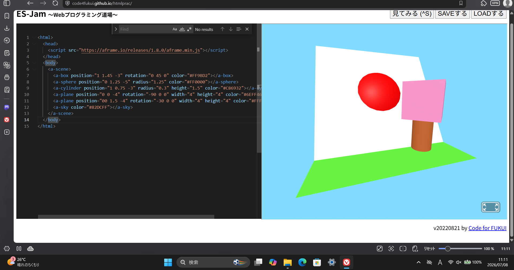

3-1 JavaScript体験：VR空間を作る

自作した３次元空間
1.内容
webプログラミング道場にA-Frameからコードをコピーアンドペーストしてきて、
そのコードから物体のX、Y、Z軸の動かし方やRGBカラーの変更方法を学び、
それを活かしてオリジナルのVR空間を作った。
2.感想
元々あった物体の色、大きさ、座標を変更し、床のようになっていた平面を複製して
位置と傾きを調整することで、自分は国旗、桜の木、草むらと青空のVR空間を作成しました。
1つ物体の操作方法がわかればスムーズに完成できました。